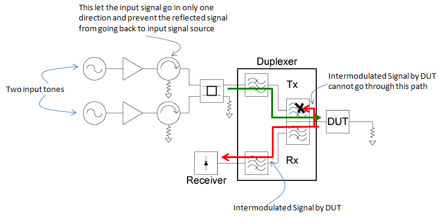
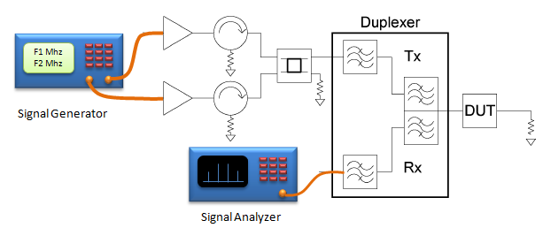

|
RF - PIM Home : www.sharetechnote.com |
|
PIM stands for Passive InterModulation Distortion(IMD). As it stands for, it is 'InterModulation' caused by 'Passive component'. InterModulation means 'mixing of two or more signals and generating other frequences which is different from original input frequencies'. It is same as the operation of a Mixer. The difference is that in case of Mixer the intermodulated signal is the one we want to get, but when we have such a mixed signal when we don't want it is normally callled 'Intermodulation Distortion (IMD)'. With this in mind, we can take 'PIM' is a kind of IMD caused by 'Passive components'.
What do you mean by 'Passive components' here ?
You may think of filter, duplexer kind of things... yes... these are passive components. But the 'passive components' we talking about here has wider meaning. Any portion/parts which is not active in a system can be 'passive components'. Some examples of passive components which would be usual suspect of PIM are as follows.
Why PIM become problems ?
Usually PIM is very low power. usually lower than -100 dBc. Then why this kind of weak signal become a problem ? It normally does not cause much issues when there is not much differences between transmitter power and reciever power because PIM power is very low comparing to these power. But it can be problem when the transmitter power is very high comparing to reciever power as in Cellular Base Station and Sattellite transmitter. In case of Cellular Base Station, for example, the trasmitter power from base station antenna is very high but the signal from mobile device coming into the base station recieiver antenna is extremely low comparing to the transmitter power. If any component in and around the transmitter path cause PIM, it would not be negligeably small comparing to the received signal. It would interfere with the weak recieved signal and causing poor communication quality.
How to measure PIM ?
Following is the conceptual design for PIM measurement. It is from reference [1] and I just put the comments on top of it.

Following can be more realistic illustration of the measurement system.

YouTube :
Anritsu Webinar: PIM Testing: Which frequency band test set should I use? Anritsu's MW8219A PIM Master™ with Distance-to-PIM™ Technology
Reference :
[1] Justin Henrie et al, Prediction of Passive Intermodulation From Coaxial Connectors in Microwave Networks IEEE TRANSACTIONS ON MICROWAVE THEORY AND TECHNIQUES, VOL. 56, NO. 1, JANUARY 2008
|